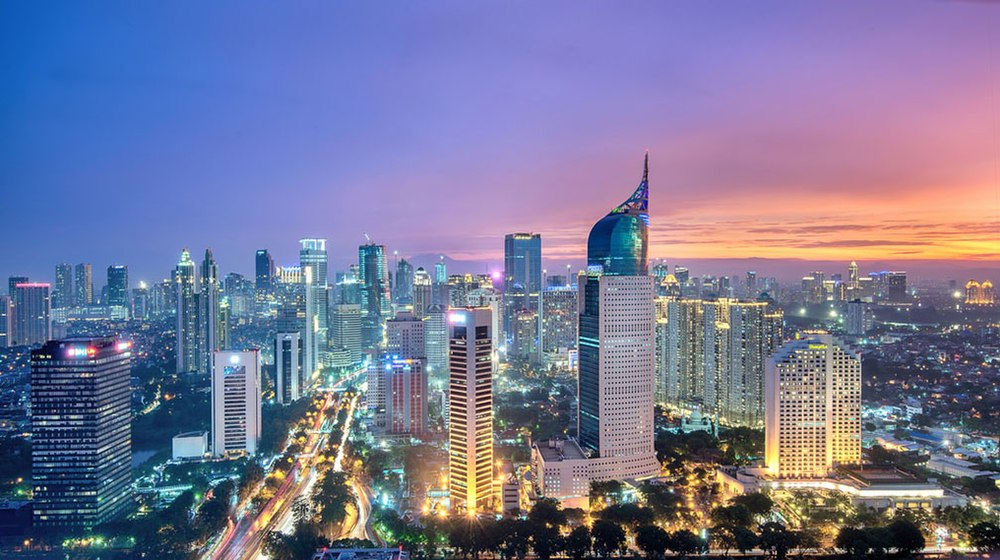

Home

Jakarta, atau secara resmi bernama Daerah Khusus Ibukota Jakarta adalah ibu kota negara dan kota terbesar di Indonesia. Jakarta merupakan satu-satunya kota di Indonesia yang memiliki status setingkat provinsi. Jakarta terletak di pesisir bagian barat laut Pulau Jawa.
Dicoding
Website ini dibuat untuk memenuhi submission tugas akhir dicoding. Apa sih di coding itu ?
About Dicoding
Dicoding adalah sebuah perusahaan startup yang bertujuan mengembangkan ekosistem developer di Indonesia. Berdiri sejak 5 Januari 2015, Dicoding memiliki platform pembelajaran elektronik di laman Dicoding.com. Dicoding telah terakreditasi sebagai satu-satunya Google Developers Authorized Training Partner di Indonesia dan menjadi mitra Badan Ekonomi Kreatif (BEKRAF) dalam menyelenggarakan program pembangunan ekonomi kreatif digital seperti Bekraf Developer Day. https://www.dicoding.com/
Desaign Web

Struktur web ini mengikuti saran submission seperti gambar di atas.
Pemilihan Warna
Pemilihan warna sendiri mengikuti colorhunt.co